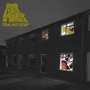

Discografía
Estos son algunos de los álbumes más representativos de esta banda, con enlace directo a YouTube para escuchar el disco completo.
Álbumes Destacados

Whatever People Say I Am, That's What I'm Not (2006)
- Incluye himnos como “I Bet You Look Good on the Dancefloor” y “When the Sun Goes Down”.
Escuchar en YouTube

Favourite Worst Nightmare (2007)
- Destacan temas como “Brianstorm”, “Fluorescent Adolescent” y “505”.
Escuchar en YouTube